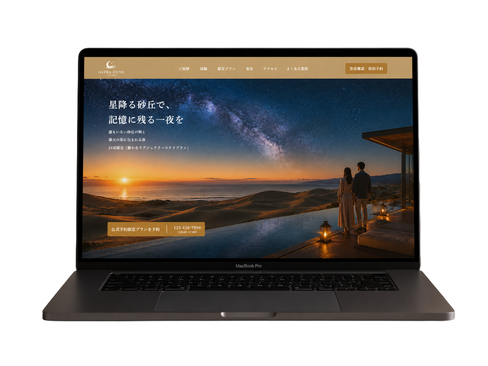
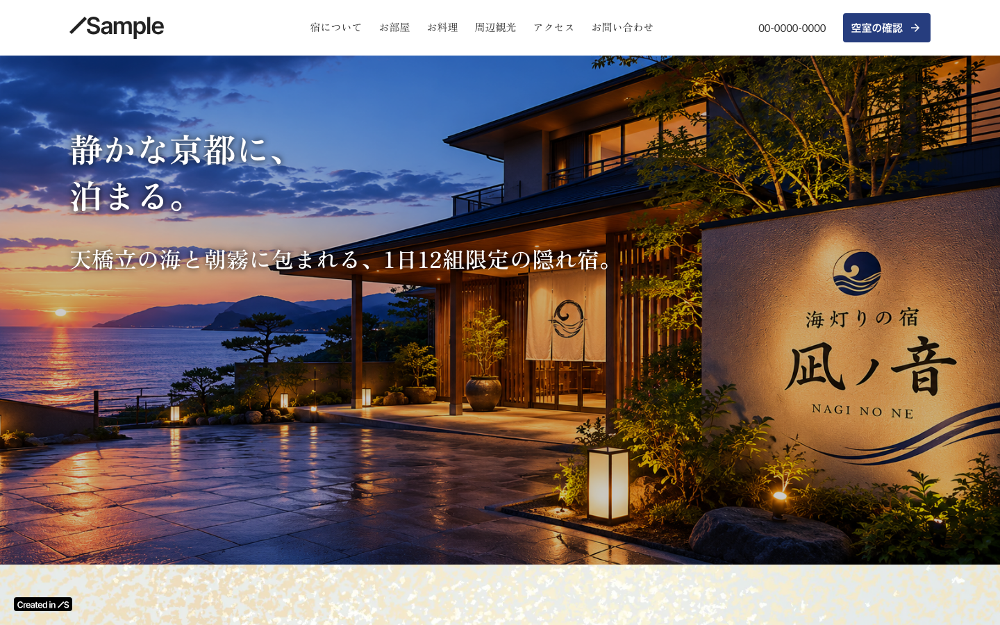
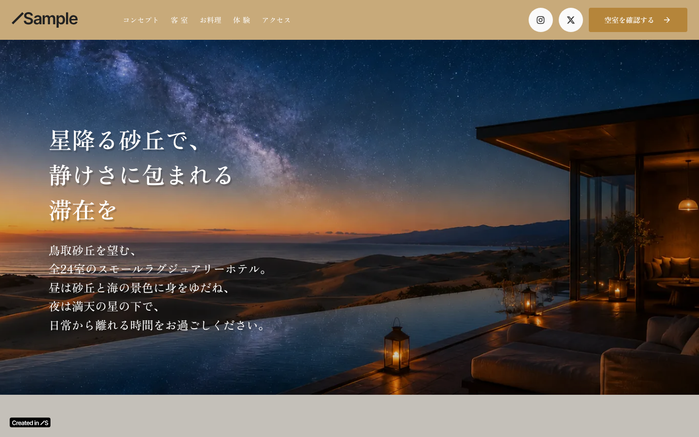

ポートフォリオ
LP · ランディングページ

ASTRA DUNE TOTTORI（ランディングページ）
星降る砂丘で、記憶に残る一夜を。鳥取の砂丘リゾートホテル向けランディングページ。星空と砂丘の情景を軸に、宿泊予約への導線を設計。


Web · ホームページ

海灯りの宿 凪ノ音（ホームページ）
京丹後・天橋立を望む旅館向けホームページ。Studioを使用して制作。和の世界観を表現しながら、空室確認・お問い合わせへの導線を重視したデザイン。

ASTRA DUNE TOTTORI（ホームページ）
鳥取砂丘を望む全24室のスモールラグジュアリーホテル向けホームページ。Studioを使用して制作。星空と砂丘の世界観を軸に、空室確認への導線を設計。

Banner · 10作品